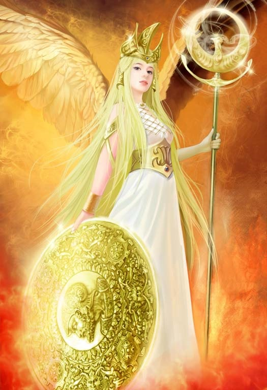

昆仑史曲 第二次天地大戰
二，东西二王，反目交战
当初，天公有令：昆仑划界---昆仑以西归西洋女王；以东归东洋女王。 此时，东洋女王见自己的地域被西洋占了，而且西洋又以其势大拒不退兵，东洋女王不觉大怒，两王发生争执。继而在南洋、东海开战。

大罗刹帝国的地盘只剩下了波斯、北非、南北美和澳洲。手执弯刀的大罗刹女们虽然四面还击，困兽犹斗，负隅顽抗，但还是节节败退。罗地出定后，临危不乱，迅速调第一主力、他的禁卫军---波斯大罗刹女战团向东挺进，准备赴东海寻找西洋开战。在南洋与准备进攻印度洋的西洋战团、和从印度洋开来的东洋战团相遇而腹背受敌。罗地赶忙将总部设在大罗山南、飞云岭下的花仙岛指挥调度，排兵布阵。一时间，双方弓上弦，刀出鞘，战鼓擂，号角鸣。一场恶战即将展开。
罗地首先遇上的是东洋兵。俗话说“人怕见面”，罗地干布与玄女早已定亲，两人见了面一叙旧情很快和解。东洋又正与西洋开战，所以，东洋军与罗地军不仅不打了，而且合兵一处共同对付西洋。
其他六妙也都心仪罗地，此时见小妹与他和好了，就也都与罗刹女合兵了。但初时尚且各打各的算盘：对罗地来说，此举把 天兵天将分而化之；壮大了自己阵营的力量，占大便宜了。
对那几位圣母来说：再不必耽心第一次天地大战悲剧重演，几位圣母娘娘就这个领走罗地的一路军，那个 又领走罗地的一队兵……正是真中有真亦有假，假中有假亦有真。她们在花仙岛组成了中华战团，共推西王圣母为统帅，玄女为执掌军机副统帅，罗地为中军统帅。
| 上 一 頁 | 下 一 頁 | 回 主 頁 |